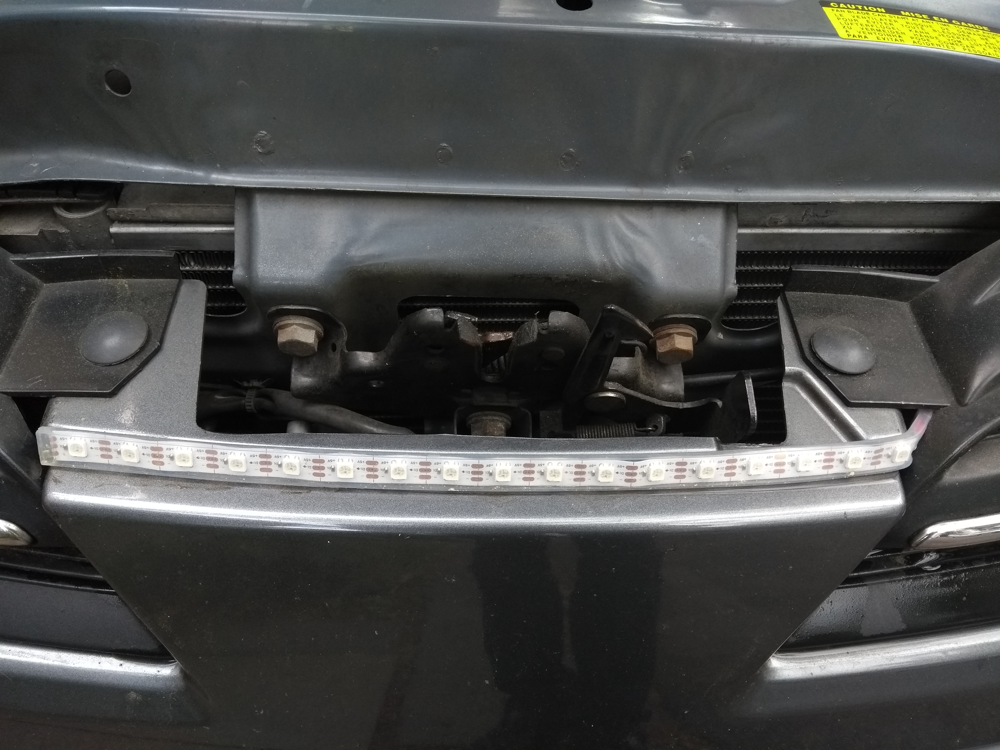
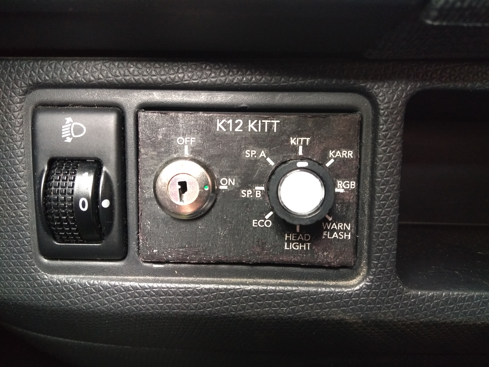

K12 KITT: The Scanner
I’ve (probably) been watching way too much Knight Rider recently.
As a result, I’ve started modifying my car.
It’s by no means a KITT, or even a Trans Am. In fact, it’s a Nissan Micra K12.
The first thing I did was add the famous scanner:
The micra has a handy little space between the hood and the front bumper, perfect for a scanner.
The problem is that that space is everything but big. That meant using the classic arrangement with reflectors and 8 lightbulbs was out of the question.
So I opted to go with much more modern technology: A waterproof WS2812 LED strip.
The waterproofing is just a bit of silicon tubing around the LED strip, which has the added benefit of acting as a diffuser.
As you can see, the LED strip fits neatly into the gap:

The space here allows for a total of 17 LEDs, and since the WS2812 are RGB LEDs, I have a wide range of colors available too!
From the LED strip itself, I routed cables to the inside of the car to an Arduino which takes care of the animations.
Because of this new flexibility, I wanted a bit more than an on/off switch.
Luckily, there was some space in my car’s dash for controls for electric wing mirrors (which mine doesn’t have), so I designed a control panel to fit that space.
I modelled the outside shape off the blank insert, and added holes for a key switch and a rotary switch.
This is what the final product looks like:

As you can see, there are a total of 8 modes:
- KITT (the one we all know and love)
- KARR (the evil KITT, in yellow)
- RGB (the classic animation of morphing one color into the next)
- WARN FLASH (a flashing yellow light)
- HEAD LIGHT (all LEDs light up white at maximum brightness)
- ECO (green dots moving in from both sides towards the center)
- SP. A (currently unused)
- SP. B (currently unused)
The button in the middle acts as a speed toggle, as almost all animations can switch between normal and fast mode.
I’ve also put the entire code on GitHub: https://github.com/Robbi-Blechdose/K12_KITT_Scanner
And finally, here’s the scanner in action, in KITT mode: